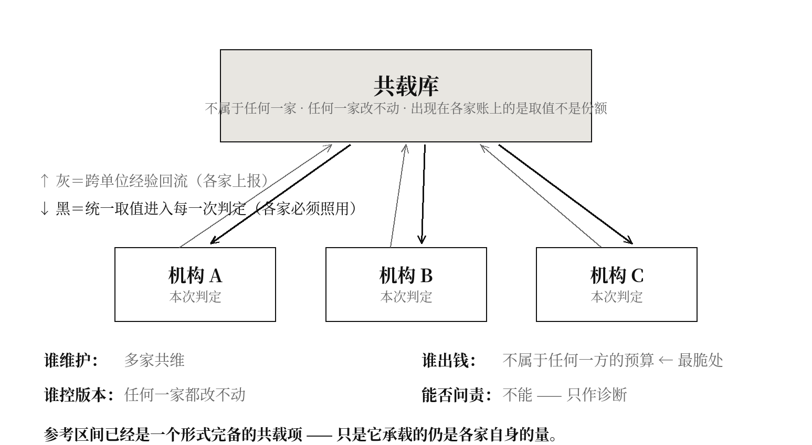

论一个不归属于任何记账单位的记账对象，如何使跨出单位的东西第一次可以入账
提要
本书第十章交出三条自己无法检验的判断，并各自指名了下一门该请的学科：财政与预算编制、司法证据法、核安全的概率安全评价。本章把这三家请进来，让它们正面回答结语第三个洞所提的问题——一样跨出单位的东西，能不能被记进一本按单位建的账？ 三家给出三个不能同真的答案：升一级合并、降到主体分摊、给“之间”单独设一个对象。三家共同假定的是：记账对象必须是一个可以被追究的主体。推翻它的材料来自核安全自己——共因失效因子不属于任何一座电站，由行业共同维护，却进入每一座电站的判定并改变其结论。本章据此命名共载项，给出四格辨别表、一句不含情态词的判据与一个可清点的比率（共载率），并指出医学早已拥有一个形式完备的共载项——参考区间——而它一栏内容都没有往里放。第十一节交代它解掉了本书哪两个洞、以及它没有解掉的那一半。
一、这一章要撞的是本书自己交出的洞
先说清层级，否则本章会被读成对三乘三结构的破坏。 本章提出的共载项，不是第十栏。九栏是九类需要被记录的内容；共载项是一种记账设施，它承载的正是九栏中那几类跨出单位的内容（第一、三、四栏，以及第二、六栏所需的判定参数）。它与九栏不并列，而在九栏之下：没有它，那几栏就只能停留在"应当记"而无处可记。 相应地，共载率也不是第十个读数，它是一个关于输入来源的读数——它不问那一栏里记了什么，只问那一栏的取值从哪里来。
前十四章的靶子都在别处。这一章的靶子在本书自己身上。
第十三章第六节其三写下了一个死结：九栏跨科室、跨条线、跨信息系统，而按第三章的主张，凡是跨出单位的东西都没有归属——本书的处方落在本书自己指认的那个缺栏里。一个没有归属的问题，找不到一个有归属的解决者。
结语第三个洞写得更彻底：全书九章都默认解法是“加一栏”，但一本以个体为单位的账，加一栏“由谁维持”，记的仍然是这个个体的属性；真正跨单位的那样东西是否可能在任何以单位建立的账本里被记下来，本书没有回答。
这两处不是谦辞，是本书目前最实的两个缺口。本章要做的是把第十章点名的三门学科请进来，看这个问题在它们那里是怎么处理的。
二、三种互不相容的回答
2.1 财政与预算编制：升一级建账
政府综合财务报告与企业合并报表处理的正是这件事：多个独立核算的单位，各自有账，而它们之间存在往来、共用与重复。做法是合并——把下级单位的账并进上级主体，并抵销内部交易与内部往来。
这条路的承重假定很干净：跨单位的东西之所以记不下来，是因为记账主体划得太小；把主体划大，它就落进来了。
2.2 司法证据法：降到主体
法庭的做法方向相反。举证责任必须落在一个具体的当事方身上；判决必须指向可执行的主体。“共同责任”从来不是一个终点，它必须被分摊回个体才可执行——连带责任、按份责任，都是分摊的两种形式。
它的承重假定同样干净，并且与上一条正面冲突：把主体合并起来记账，正是责任消失的方式。 一笔算在“整体”名下的东西，等于没有任何人对它负责。
2.3 核安全的概率安全评价：给“之间”单独设一个对象
核安全的概率安全评价面对的是同一个问题的最尖锐形态：三个独立通道同时失效的概率，若按各自独立相乘，会小到可以忽略；而实际事故一再表明它不可忽略。原因是共因——同一批次的元件、同一次维护操作、同一个设计缺陷。
它的做法既不合并也不分摊：给共因单独设一个参数与一条独立支路，让它以自己的名义进入计算。
2.4 三条立场的互斥，可以用一个具体对象逼出来
取一位在四个科室就诊的患者，四份处方各自合规，而它们扣的是同一份肝肾清除能力。
财政说：把四个科室并成一个核算主体，抵销重复，问题解决。
司法说：合并主体正是责任消失的地方——出了事，四个科室每一个都会指向“整体决策”。必须分摊回具体开方人。
核安全说：两条都不对。这份共享的清除能力既不属于合并后的整体（它是生理上的量，不随组织架构变化），也无法分摊回任何一科（分摊比例本身就是待求的东西）。它需要一个自己的科目。
三家的日课，恰是另一家诊断出的病。 财政天天做合并，而司法视合并为逃责的手段；司法天天做分摊，而核安全认为把共因摊回各通道正是让它在账上消失的做法；核安全天天给共因单独建对象，而财政会立刻追问：这个科目归谁管、谁的预算出钱、谁签字。
三、三家共同假定了什么
把三条答案念给三家听，都会同意的那一句是：
记账对象必须是一个可以被追究的主体。
它可以是合并后更大的主体、分摊后更小的主体，或者新设的一个对象——但它必须有归属。三家争的全是“主体该怎么划”，没有一家问过：记账对象必须是主体吗？
这句话不会引起任何争论，这正是它是那块共同地基的标志。
四、推翻它的那件材料，来自核安全自己
核安全用来处理共因的那个参数——通常记作 β——是什么？
它不是部件，不是系统，不是任何一座电站的属性。它是一个取值，来源是跨设施的运行经验数据库，由行业与监管方共同维护并周期性更新。它不属于任何一座电站，而它进入每一座电站的安全评价并改变其结论。
一座电站的分析师不能自行决定 β 取多少。他也不“拥有”它。他只是把它取过来用，而他自己的运行经验又反过来汇入那个库，参与下一次更新。
核工业已经运行了几十年一个没有持有者、却在每一本账上生效的记账对象。
这件材料在核安全自己那里回答的是另一个问题——“共因失效概率怎么估”。从来没有人拿它当作跨单位之物可被记账的存在性证明。而它恰恰是。
五、承重命题
跨出记账单位的那些东西，不必先被合并、也不必先被分摊，就可以进入按单位建立的账——办法是让它以一个不归属于任何单位、由多个单位共同维护、并在每一个单位的判定中作为输入生效的记账对象存在。
本章把这一类对象命名为共载项。
5.1 四条性质
其一，没有持有者，但有维护者。 没有任何一个单位拥有它、可以处分它；而它必须有人喂养，否则会停摆。持有与维护，第一次被分开。
其二，在每本账上出现的是取值，不是份额。 这是它与合并、分摊的分水岭：合并给出总额，分摊给出份额，共载项给出的是一个每家都必须照用的数。
其三，更新由跨单位经验回流决定，不由任何一家决定。 任何一家都改不动它，这是它能起作用的全部原因——一旦某一家可以改，它立刻退化为那一家的账。
其四，它承载的是“之间”的量。 这一条决定了它在本书里的位置：九栏缺的那些东西，全部是“之间”的量。
5.2 它不是什么
不是“更高一级的账”（那是合并）。不是“责任的比例划分”（那是分摊）。不是“数据共享”——十家医院把数据汇集起来，库里每一条仍可追溯到某一家的病人，那是汇集，不是共载。共载项里的那个数，不属于任何一家，而每一家都必须用它。
六、辨别格
第一根轴问：这一次判定所用的输入，是本单位自己定的，还是取自跨单位共维的库？
第二根轴问：该输入承载的，是本单位自身的量，还是单位之间的量？
| 载自身的量 | 载“之间”的量 | |
|---|---|---|
| 各自定 | ① 孤账：九栏全空的现状 | ③ 无主科目：无人维护，不能长期存在 |
| 共维 | ② 空共载：形式完备而内容为零 | ④ 立账：本书的完成态 |
要打的是格②，而不是格①。 这是本章与前十四章最要紧的差别：前十四章打的是“没有那一栏”，本章打的是“那一栏的架子已经搭好了，而里面放的不是那样东西”。
格②的三条签名齐备：形式上完全合规——用的是权威机构发布的共维取值；失效不产生任何信号——每一次判定都有据可依；越标准化越牢固——共维库的权威性随使用年限单调上升。
格③解释了为什么这件事不会自发发生：一个承载“之间”的量而无人维护的科目，第一个预算周期就会被砍掉。格③到格④的距离，不是技术距离，是有没有人出钱的距离。
七、一句可以拿去问记录的话
这一次判定所用的那个数，是这家机构自己定的，还是取自一个由多家共同维护、且任何一家都改不动的库？如果是后者，那个库里记的是这家自己的量，还是这家与别家之间的量？
两问都不含情态词，都可以拿去问一份具体的文件：规程、参数表、系统配置、引用清单。它们问的不是这家机构好不好，是这家机构的输入从哪里来。
八、共载率
共载率 ＝ 一次判定所依据的输入中，取自跨单位共维库、且承载“之间”的量的项数 ÷ 全部输入项数。
无量纲，介于零与一之间，可事后清点，不需要新增任何一次测量——只需要把一次判定的输入逐项列出，逐项判读来源。
正交实例：一家严格执行全部最新指南、参数一律取自权威机构、从不自行设定阈值的医院，其“取自共维库”的比例接近一，而共载率仍然是零——因为那些库里记的全是这个病人自己的量（血压该多少、糖化该多少），没有一条记的是这个病人与别的科室之间的重叠。既有指标最好看的地方，正是这个数最难看的地方。
九、医学早已有一个完美的共载项，只是里面什么都没放
参考区间是什么？
它由跨机构的人群研究得出，由专业组织与监管方共同维护，周期性更新，任何一家医院都改不动它，而每一份检验报告都在用它。四条性质逐条命中——它是一个形式上完备的共载项。
而它承载的是什么？是“这个个体的这一项数值应当落在哪个范围”。是自身的量。
于是医学的位置可以被精确指出：它已经有了共载项的全部形式，一栏内容都没有往里放。 它落在格②。
这同时改写了第二章的诊断。第二章说判定线自己在动而只有一端被记账，处方是“把标准版本号记进判定结论”。本章可以说得更进一步：版本轨迹本身就应当是共载库里的一项——不是每家医院各自记自己用了哪一版，而是那个库自己就带着它的移动史，并把移动史作为输入交出去。前者是二十家医院各记各的，后者是一处记完、二十家共用。
九栏中至少有三栏可以用同样的方式入库：共享储备标识与份额（第三章）、维持动作的分类与计次口径（第一、四章）、外部参照的来源与最后核验日期（第六章）。它们都不需要新建一本账，只需要在一个已经存在的库里增设字段。

十、三处反过来的约束
司法削掉执行力。 一个没有责任主体的记账对象，出了事无法追究到人。因此共载项只能用于诊断，不能用于问责。 这一条与第十四章第一条伦理约束正好合上，但它是从外面被强加的，不是本书自己让步得来的——这使本章的适用范围比作者原本想要的窄得多。
财政削掉可持续。 共同维护的库需要有人出钱，而它是典型的公共品：谁都受益，谁都不愿承担。共载项的存续依赖一笔不属于任何一方的预算，这是它最脆的地方。 参考区间之所以活下来，是因为它搭在一套已有的监管与认证体系上；九栏里的新项没有这样一套现成的体系。
核安全削掉普适性。 β 因子之所以能被估出来，前提是核工业有强制事件报告制度、统一的失效分类与几十年的跨设施数据。医学没有这三样中的任何一样。 于是共载项在医学里需要一个前置条件——强制的、口径统一的、跨机构的记录制度——而那恰恰是本书九章反复指认为缺失的那样东西。
第三处削弱最重，它使本章有循环的危险：共载项要解决九栏，而共载项本身需要九栏所要求的那种记录制度先存在。 本章对此没有解法，只能指出一处松动——参考区间证明了这套东西可以先从最容易的一栏建起来，再逐项扩充；不必等全部条件齐备。
十一、它解掉了本书哪两个洞，以及没有解掉的那一半
结语第三个洞（按单位建账有没有替代品）：解掉了。 有，而且已经运行了几十年，只是不在医学里。按单位建账并不必然排除跨单位之物——只要那样东西以取值而非份额的形式进入。
第十三章第六节其三与结语第二个洞（说不出该由谁牵头）：解掉了一半。 不需要一个牵头者，需要的是一个共同维护的库。参考区间就是现成的先例：没有任何一个机构“负责”它，而每一次判定都在用它。
没有解掉的那一半，必须写清楚：库需要有人出钱维护（财政那条削弱），需要一套强制的统一记录制度作为数据来源（核安全那条削弱），而且它只能用于诊断不能用于问责（司法那条削弱）。三条里任何一条不成立，共载项就停在格③，不出一个预算周期。
所以结语那两句应当改写为：替代品存在，路径可指认，而它的三个前置条件本书一个也没有解决。
十二、与几种相近说法的分界
公共品理论。 分离线：公共品讲的是消费上的非竞争与非排他，是一种消费性质；共载项讲的是记账对象无持有者，是一种账目结构。判定：一个完全排他、收费才能使用的商业参数库，若仍能承载“之间”的量并被多家照用，则公共品框架对本章为空。
标准化与互操作性。 分离线：标准规定的是格式与接口，共载项承载的是取值，且取值随经验回流更新。判定：一个只规定字段格式而不提供任何取值的标准，其共载率为零。
共享数据基础设施。 最近的一位，必须坦白承认操作上高度重合。分离线：数据共享是把各单位之物汇集起来，库里每一条仍可追溯到某一家；共载项里的那个数不属于任何一家。判定：把十家机构的数据汇集成库之后，若每一条记录仍可回指到某一家的对象，那是汇集不是共载。
计量溯源与量值传递。 极近，且是本章形式上的祖先。分离线：溯源保证的是“同一个量在不同地方测得一致”，共载项承载的是“多个单位之间的那个量”。判定极干净：两家机构的量值溯源做到完美，其叠计比仍然可以是三。
精算与行业损失表。 保险业早有此物（生命表、行业赔付经验表），四条性质同样命中。分离线：行业表承载的是“这一类的平均”，仍是自身的量之统计；共载项承载的是“这几家之间的重叠”。判定：行业表做得越准，各单位对自身的估计越准，而叠计比不变。
十三、与本书其余各章的分界
前十四章各指认一栏缺失，本章指认的是这些栏可以落在哪里。分工线因此很清楚：前十四章是“缺什么”，本章是“往哪儿放”。
与第十章的关系最紧：第十章说本书有三条判断无法自我检验，并指名三门学科；本章把那三家请了进来，因而是第十章那张欠条的兑付。同时它也确认了第十章的方法——请一门本书没用过的学科进来，确实撞出了前十四章撞不出的东西。
与第十一章的关系是互补的：第十一章说九个读数在任何单一场所都采不齐，本章给出的正是这个困难的一种出路——采不齐是因为它们分属不同单位，而共载库不按单位收数。
十四、反噬
这个读数一旦进入考核，最省事的实现方式是：建一个库，往里放各单位自己的量，然后报告共载率很高。
那正是格②——医学已经在那一格里待了几十年。本章因此比前十四章更容易被做空：前十四章的反噬需要新增空字段，本章的反噬连字段都不用新增，只要把既有的参考区间库指过去就行。
唯一的防线在第二根轴：验收必须逐项判读“这一项载的是自身的量还是之间的量”，而这个判读需要人做、需要编码规则、需要一致性检验——又回到第十二章第四节那笔欠账。我看不到出口。
十五、伦理
其一，共载项不得用于问责（司法那条削弱的直接后果）。任何据共载率对机构或个人作出的评价、排名与资源调整，都不是本章的主张。
其二，共载库的维护方与使用方之间必须公开利益关系。 一个由被判定方出资维护、又向被判定方提供取值的库，其取值不可信；这一点在第六章关于参照独立性的论证中已有论证，本章不重复，只声明它同样适用于自己。
其三，任何机构不得因共载率低而被拒绝准入。 本章的读数指的是输入结构，不是服务质量。
十六、证伪条件
必须先排除的竞争解释：共载率高的机构表现更好，可能仅仅因为它们更规范、资源更多。排除办法：控制机构级别、规模与既有质量指标之后，共载率是否仍与九栏中任何一栏的读数相关。
其余条件：
其一，在一个已有跨机构共维参数库的领域（临床检验、核电、保险精算任选其一）里，若九栏中任何一栏的读数与“是否使用该库”完全无关，本章为伪。
其二，若某个承载“之间”的量的记账对象，在完全由单一主体持有、单一主体维护的条件下长期稳定运行，则本章的“无持有者”这条性质为伪。
其三，若参考区间库被证明其实一直在承载“之间”的量（例如它的版本轨迹已被系统性地作为输入交出），则本章第九节的诊断为伪，医学并不在格②。
若本章被证伪，会学到什么：那意味着跨单位之物入账的条件比本章所说的宽松，合并或分摊之一足够——而那将直接支持财政或司法一方，本书第三章关于“重复计入无处可记”的主张也需要重新掂量。
十七、本章自己落在哪一格
本章提出共载项，而本章自己所依赖的那件材料——核安全的共因因子——是从一门本书此前从未使用过的学科里取来的一个取值，本书没有能力核验它，也无权更新它。
按本章自己的语言：本章的这一处输入取自一个共维库，本书只是使用者。这是本章唯一一处名副其实地落在格④的地方，而它是被动落进去的，不是设计出来的。
同时必须写下一处不利：本章解掉了本书自己的两个洞，而解法来自本书自己点名请来的三门学科。这在形式上是自证的——第十章开出的欠条，由第十五章自己兑付，中间没有经过任何外人的检验。 一个体系自己给自己开的处方能治好自己的病，这件事本身应当被怀疑；本章的证伪条件因此全部押在本书之外的领域上，而不押在医学内部。
十八、一条写死日期的制度扩散赌注
到二〇三五年十二月三十一日为止，至少出现一个跨机构共同维护、且承载“单位之间的量”的公开参数库或字段集——所承载者为下列三者之一：共享储备的标识与份额口径、维持动作的分类与计次口径、判定标准的版本轨迹——并被至少三家机构在常规判定记录中引用。
什么不算命中，一并列明：
其一，仅出现在论文、白皮书、会议报告或试点总结里的，不算。
其二，只规定字段格式而不提供任何取值的，不算——那是标准，不是共载项。
其三，库中每一条仍可追溯到某一家机构的对象的，不算——那是数据汇集。
其四，由单一机构建立并维护、其他机构仅被允许查询的，不算。
其五，仅供研究使用、明确写明不得用于临床或工程判定的，不算。
若到期未命中，本章的实践主张即告失败，无论它的分析部分是否仍然成立。